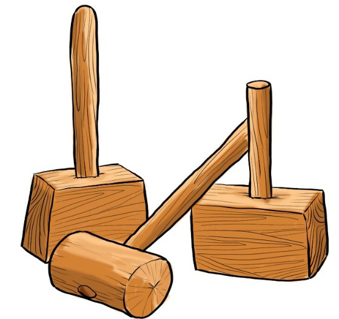
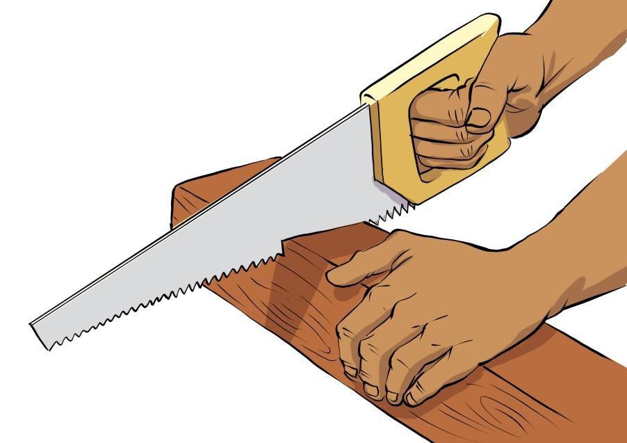

Figure 5.17: Mallets
Hand saw: This is a hand tool typically with a long thin serrated blade which is operated by backward and forward movement. It is used for cutting through materials. Hand saws are categorised according to the material used to cut. There are mainly two categories of hand saw which are wood and metal hand saws. The metal hand saw can be used for cutting plastic materials. Figure 5.18 shows a wood hand saw.

Figure 5.18: Hand saw for cutting wood
Panga: This is a large, broad-bladed knife used for implementing or sculpting wooden materials. Figure 5.19 shows a panga used in shaping wood.